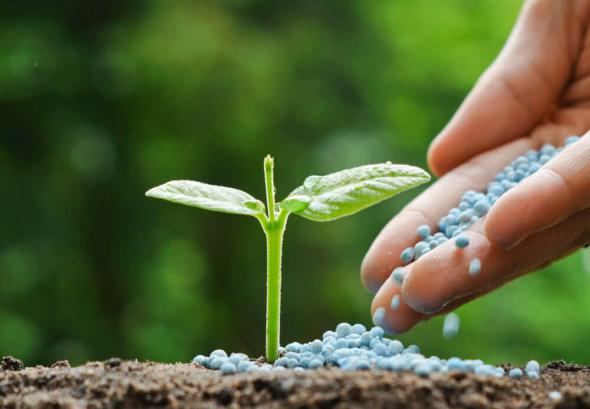

AGRICULTURE
- Crops
- Fertilizers and Pesticides 
- Irrigations
- Drip irrigation
- Center pivot
- Irrigation by lateral move (side roll, wheel line, wheelmove)
- Lawn sprinkler systems
- Hose-end sprinklers

The farmers and rural communities, world over, have contributed greatly in management of agrobiodiversity including plant genetic resources for food and agriculture (PGRFA). It is well accepted now that the efforts of farming communities in creation, conservation, exchange and enhancement of PGR should be recognized and strengthened. Farmers’ access and rights over seeds are considered an essential component of food sovereignty. In the present article we discuss the aspects of farmers’ rights, the community level seed systems, food sovereignty and the potential of farmer household production and dietary diversification in combating malnutrition and community health promotion with regard to farming communities of Uttarakhand hills in north-western India. Salient findings of two case studies, on farmers’ varieties documentation and registration, and the potential of local food systems in addressing community health and nutrition were used to particularly showcase the nutritional contribution of native foods in the context of sustainable food-based approaches to community health and nutrition. Further, the need of a proactive alliance was suggested between local communities and their key allies collaboratively creating a research and advocacy agenda in support of agrobiodiversity and the revival of local food systems and landscapes within the broader framework of food sovereignty.
Organic fertilizers are derived from living things such as animals and plants. Most common are manures, bone meal, fish meal , vermin compost etc. They are generally slower to release as micro organism in the soil , have to break them down first so the plant can use them. Organic fertilizer supply nutrients for both plant and soil. Inorganic fertilizers are man made formulae that can be formulated for various speeds of release. Most common are Urea, Single Super Phosphate, and Murate of Potash.
Pesticides are substances that are meant to control pests or weeds. The term pesticide include all the following-
1.Herbicide
2.Insecticide
3.Insect growth regulator
4.Nematicide
5.Termiticide
6.Molluscicide
7.Piscicide
8.Avicide
9.Rodenticide
10.Predacide
11.Bactericide
12.Insect repellent
13.Antimicrobial fungicide
14.Disinfectant and
15.Sanitizer
In general pesticide is a chemical or biological agent that deters, incapacitates, kills or otherwise discourages pests. Both chemical pesticides and bio pesticides are important for crop protection. Bio pesticides are integral part of organic crop cultivation.

Irrigation (also referred to as watering) is the practice of applying controlled amounts of water to land to help grow crops, landscape plants, and lawns. Irrigation has been a key aspect of agriculture for over 5,000 years and has been developed by many cultures around the world. Irrigation helps to grow crops, maintain landscapes, and revegetate disturbed soils in dry areas and during times of below-average rainfall. In addition to these uses, irrigation is also employed to protect crops from frost,[1] suppress weed growth in grain fields, and prevent soil consolidation. It is also used to cool livestock, reduce dust, dispose of sewage, and support mining operations. Drainage, which involves the removal of surface and sub-surface water from a given location, is often studied in conjunction with irrigation.
Irrigation methods
There are several methods of irrigation. They vary in how the water is supplied to the plants. The goal is to apply the water to the plants as uniformly as possible, so that each plant has the amount of water it needs, neither too much nor too little. Irrigation can also be understood whether it is supplementary to rainfall as happens in many parts of the world, or whether it is 'full irrigation' whereby crops rarely depend on any contribution from rainfall. Full irrigation is less common and only happens in arid landscapes experiencing very low rainfall or when crops are grown in semi-arid areas outside of any rainy seasons.
1.Surface irrigation
2.Micro-irrigation
3.Sprinkler irrigation
4.Subirrigation